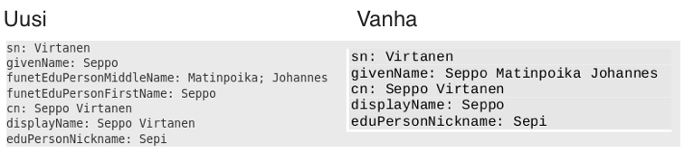

Kari Laalo / Keijo Korte / Sami Silén
Kokous tallennetaan läsnäolijoiden toteamisen ja muistion kirjaamisen tueksi. Tallennetta ei julkaista ja se poistetaan käyttötarkoituksen toteuduttua.
Haka-ohjausryhmän 1/2013 aloitteesta käynnistyi päivitystyö ensisijaisena tavoitteena tutkijastatuksen tunnistaminen. Myös muuta päivitystarvetta oli jo tunnistettu
Seuraava Haka-ohjausryhmän kokous on 2.10.2015.
ChangeLog: https://confluence.csc.fi/x/fQ0lAg
Draft-dokumentissä muutokset värjätty sinisellä
Tutkijastatuksen tunnistaminen: arvo FACULTY määriteltävä, milloin mahdollista
Huomaa myös eduPerson-skeeman muutos: member-arvo asetettava tietyissä tilanteissa
Kansainvälisesti paremmin yhteensopiva semantiikka

Muutos ei ole taaksepäin yhteensopiva aiempien skeemaversioiden kanssa
Vain olennaisimmat lueteltu. Muiden osalta, katso changeLog
Operaattori esittää
Shibboleth IdPv3 käyttöönotto workshop järjestetään Maanantaina 2.11.2015